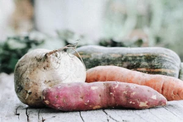
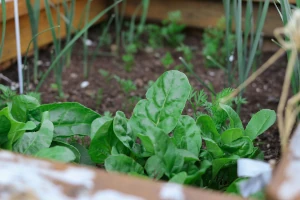
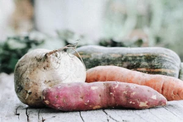
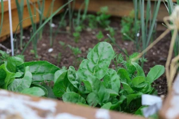

Storing your fruit and veg
 



Organic fruit and vegetables haven't been chemically treated and so need to be stored correctly to help get the best life from it and avoid food waste.
Potatoes and other root veg - the most important thing to remember when storing potatoes, carrots, parsnips, etc., is to keep them cool and dark. Ideally you should never wash your veg before storing: the soil acts as a natural preservative and washing them will cause them to go off quicker. Keep them wrapped in brown paper and keep in somewhere like a cool, dark cupboard or bottom of your fridge. If stored correctly your spuds will last many months, and if they begin to sprout, they are still edible, just knock the eyes off!
Beetroot keeps best in the fridge, keeping them solid for longer.
Leafy greens should be kept in the fridge. Wrapping in plastic will help to keep them succulent and fresh.
Onions - these keep easily. Cool, dry and airy will do the trick.
Squash - keep at room temperature with air to breathe; too much moisture may cause them to go off. If you do notice mould occurring, cut it off and the remaining squash will still be good to eat.
Avocados and mangos - store at room temperatrue and do not squeeze the flesh as this will cause the fruit to become bruised and rot.
Oranges, lemons, grapefruit, and apples are unwaxed and should be fine in a cool room for at least a week. In a hot room they could go off very quickly.
Apples kept cool and dark will keep much longer.
Kiwis are usually unripe and will ripen slowly in a warm (16°) room. You can feel when they are starting to get soft and they are usually at their best; this could take several weeks depending on the condition they arrive in.
Bananas have to be harvested green for their 7-10 day boat trip. On arrival in UK they go into special ripening stores where they are held at 14°C. Usually they come to us ready ripened with just a hint of green, which allows a few days for consumer use. Sometimes due to problems of supply shortages they may not have been fully ripened before they arrive with us so we have to send them out green. They will ripen providing you:
- Wrap in plastic
- Place in a dark place
- Keep at 14°C
They will ripen within a week or so. At cooler temperatures they will slowly ripen but lose flavour and become woody. Skin colour is not necessarily an indication of ripeness. The very richest flavour will be attained if the skin has dark brown spots (like freckles) all over.
Text by Organic Lea. Reproduced for teaching purposes only.